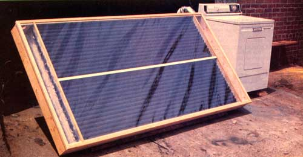
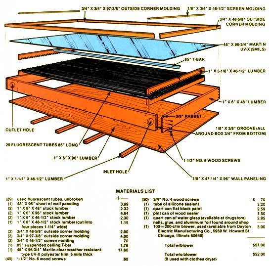
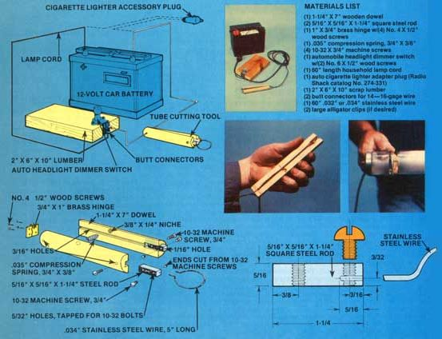

Here's yet another simple, easy-to-build, inexpensive, "make it from scrap" solar collector from the talented folks at MOTHER's Research Labs. Tests indicate that the unit operates at efficiencies as high as 83% .. . and you can put one of the collectors together for only about $52 (less than $2.00 per square foot).
Start this project by rounding up a healthy supply of burned-out 96"-long fluorescent lights (available for free from offices, factories, stores, shopping centers, dumps, etc., all over the continent). You'll need 29 of the tubes altogether for your finished collector, but it's a good idea to pick up a few extras in the beginning . . . just to allow for breakage.
Puncture the metal or plastic ends of the long lights to relieve the vacuum inside, then use the special cutting tool described in the sidebar with this article to remove one end from each tube. Next, pour some sharp sandblasting sand into the cylinders and tip them back and forth repeatedly until all the coating has been removed from their insides. Then cut enough off the other end of each cylinder to leave you with pieces of clean, transparent glass tubing, each 85" long and open on both ends. Finally, paint all 29 of your glass cylinders flat black inside and out (use a cotton pad, pulled through each tube with stiff wire, to spread the paint deep inside).
Next rout a 1/8" X 3/8"-deep groove in the sides of the collector box, rabbet its corners, trim the paneling to fit, and fasten the whole box together with wood screws. Cut one of the remaining 1 X 6's into four pieces and screw them to the bottom of the frame as additional support for the collector's back. Then, using water glass as glue, attach aluminum foil (shiny side up) inside the bottom paneling.
Cut the two 1 X 6 tube holders down to a width of 5-1/8", then draw a line down the middle of both boards and-starting 9/16" in from one end-mark the 29 center points (1-9/16" on centers) for the mounting of the modified fluorescent tubes. Next, drill out all the tube mounting holes with a 1-1/2" hole saw and cut the two boards apart on their center lines. One half of each holder should then be securely fastened inside the collector box (5-1/8" in from each end). Finally, lay a bead of silicone sealant along the surface of the holes in the mounted half-holders . . . set each cut-and-painted glass tube in place ... spread sealant on the holes in the other halves of the holders . . . and-while the top halves of the holders are held snugly down on the tubes-attach the scalloped pieces of wood to the sides of the box with wood screws.
A length of T-bar (ordinarily used to support a suspended ceiling) is next added to the center of each completed tube holder to keep the 5-mil UV-X film that will be used to cover the collector from sagging down onto the tubes. Mortise a groove and cut a slot into the middle of each tube holder so the T-bar will set down flush with the tops of the pieces of wood. (Don't be afraid to file away the "bulb" on the bottom of the T-bar's "leg", if that's what it takes to make it fit down into the slot.)
Now's the time (before you close your collector up and make it too difficult to work on) to cut inlet and outlet air holes into one side of the box with a 3" hole saw. Smooth the edges of the holes with sandpaper, clean the sawdust out of the box, and slap a good coat of wood sealer onto al! the wood-inside and out-that's still exposed on your collector.
Then stretch and staple the UV-X film to the box's top. The plastic covering should be further secured and protected-all the way around the face of the collector-with 3/4" X 3/4" outside corner molding. In addition (to keep air from blowing past, rather than through, the painted collector tubes), lengths of 1/8" X 3/4" screen molding should be cut to fit, laid down across the UV-X film, and securely screwed in place along the tops of the tube holders.
That's it. If you now hook a scrounged-up small (100- to 200-cubic-feet-per-minute) blower to your new collector's inlet hole, attach a flexible hose to its outlet, and aim the energy catcher at the sun . . . you'll find that the unit will give you up to 6,250 Btu's per hour on a clear day. Which is enough to heat a room, dry your clothes, or dehydrate food in a bin. Experiment a little! And let us know how you come out.
The principle of this amazing little cutter is quite straightforward: A stainless steel wire, which can be heated electrically, encircles the tube. When the current is on, the wire heats and melts into the glass. Then, when the power is turned off, the glowing wire immediately cools . . . which causes the glass to cool unevenly and break apart on the melted "score line".
You can build your own cutter in about an hour with a drill, some assorted bits, a handsaw, a hammer, a center punch, a tap and die set, a chisel, a hacksaw, a pair of wire cutters, and a screwdriver.
Start by cutting the 1 1/4" X 7" wooden dowel exactly in half lengthwise. Then temporarily nail a short scrap of wood to the rounded side of each dowel half and clamp them-one at a time-in a vise so that the flat side of each half faces up.
Now take your handsaw and cut a 1/8"deep lengthwise groove down the center of each half-dowel's flat side. Then use a wood chisel, carefully, to open one end of each of these grooves into a wider and deeper (5/16"-wide, 3/8"-deep, and 1-1/4"-long) slot.
Next drill four 3/16" holes through the dowel halves (one hole 1/2" in from each end of each half). And use a 3/8" bit to bore two holes (each about 1/4" deep but not all the way through the wood) into the flat faces of the half-dowels about three inches from their "unslotted" ends and to one side of the center grooves.
Now drill two 5/32" holes-one 3/16" from the end and the other 3/8" from the opposite end-through each of the two 1-1/4" X 5/16" X 5/16" square steel rods. Cut threads into each of these four holes with a 10-32 tap. Then put the square rods-one at a time-into the vise "short-end" (the end with the hole drilled through it 3/16" back) out and bore a 1/16" hole lengthwise into each block 3/32" from the edge, until the drill bit pierces through into the first tapped hole.
Next, stick a length of .032" of .034" stainless steel wire into the 1/16" hole and thread a 10-32 machine screw into the end of the tapped hole closest to the wire until the screw touches the wire's edge. Cut the rest of the screw off flush with the side of the square rod, then lock the sawed-off "stop" that is left in the hole firmly in place by nicking the cutoff stub with a center punch where it meets the face of the square rod.
Line the two wooden handle halves up with each other, tape them together, mark and drill the four 3/32" hinge-mounting holes in the handle's butt, screw the hinge firmly in place, and remove the tape.
Then take a length of good lamp cord, separate one end of its two insulated strands for about nine inches, and peel a half inch or so of insulation from the end of each strand. One of these separated and peeled wires should then be threaded "in" through the 3/16" hole on the butt end of each half of the tube cutter's wooden handle . . . and run up through the groove sawed into the flat face of the handle half . . . so that its bare end can be seated under-and directly in contact with-the square steel block which mounts into the "business end" of each half of the handle. Slip the two steel blocks into position ("stopped" sides facing each other) and secure each one in place with a 10-32 machine screw.
Note that the steel blocks-and all metal hardware in each assembly-are recessed into the wood so that neither block or any of its components can touch the other-thereby creating a short circuit-at any time. Electrical current can ONLY travel down one strand of the lamp cord to the steel block on its end, through the loop of stainless steel wire connecting the first steel block to the second, and then back through the second strand of the lamp cord.
Finally, cut a 5" length of .032" or .034" stainless steel wire. Stick one end of the wire into the 1/16" hole in the end of one of the cutter's square steel blocks, secure the wire tightly in place with a 10-32 machine screw, and then form the stainless wire into a circle and clamp its other end into the other square block in the same way so that the ends of the handle will never quite touch when the loop of stainless steel wire is squeezed around a fluorescent tube.
When the above adjustment has been made, separate the handle halves and insert the small compression spring into the holes that were drilled for it.
At this point you're ready to hook your cutter up to a 12-volt car battery, a transformer, or an automobile cigarette lighter tap. In any case, the unit's on/off switch is nothing more than an automobile headlight dimmer switch . . available from any wrecking yard for pennies or from an auto supply house for about $2.00.
Cut a notch, if necessary, into the end of a piece of scrap 2" X 6" lumber and mount the dimmer switch to the board. Then connect one lead (it doesn't matter which) on the cutter to one pole on the battery (or to one of the cigarette lighter tap leads) . . . and the other wire from the cutter to one terminal on the dimmer switch (use a butt connector).
It's then easy to run a length of wire from the dimmer switch's other terminal (use another butt connector) to the remaining pole on the battery or the other cigarette lighter adapter lead. That's it! You're ready to cut fluorescent tubes, bottles, jars, even water glasses.
Just hook up your power source (alligator clips work fine), fit the loop of stainless steel wire around the tube of glass you want to cut, and depress the foot switch. Then, when the wire glows red hot, depress the switch again .. . and the cylinder of glass will be cut "to order". The loop of stainless, of course, will break from time to time (due to its constant expansion and contraction) but it's easy to replace . . . and that's a whole lot easier than trying to cut glass tubing with a conventional cutting tool!
|
|
 |
 |
|
 |
|
|